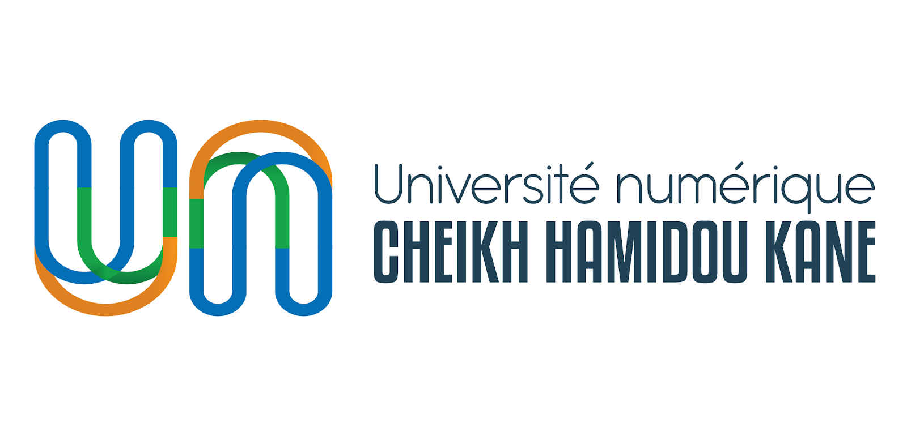
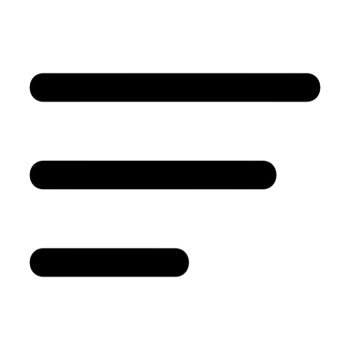
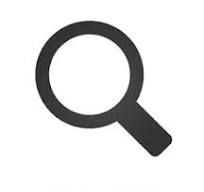
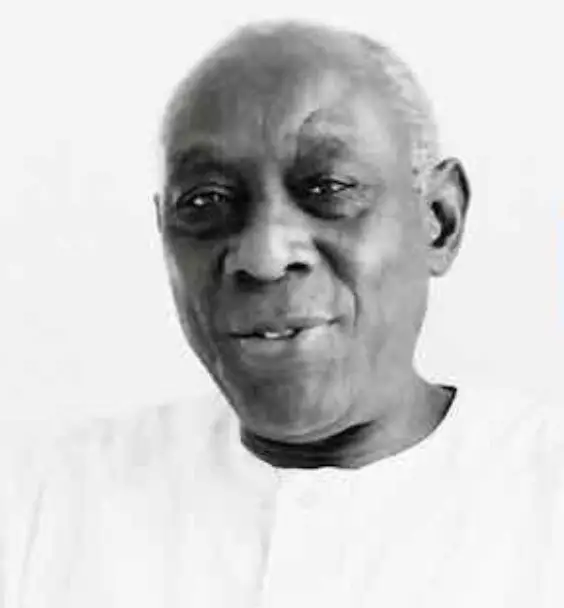
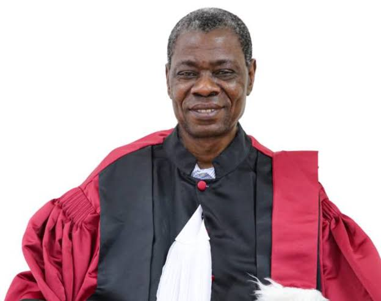
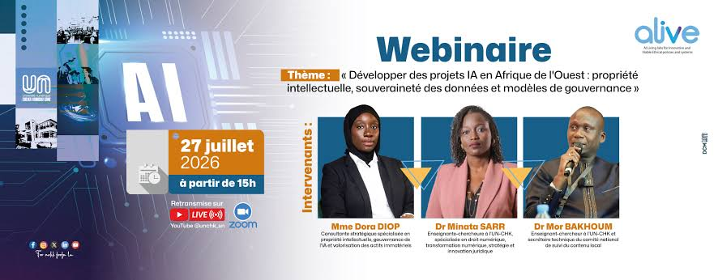
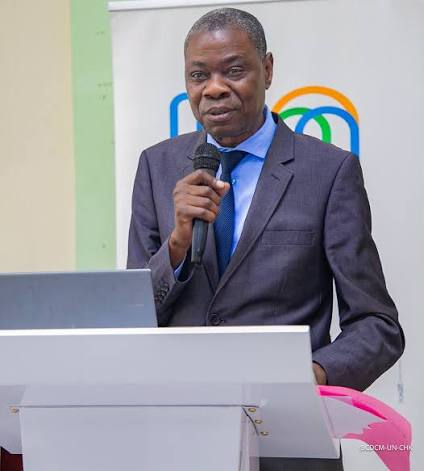
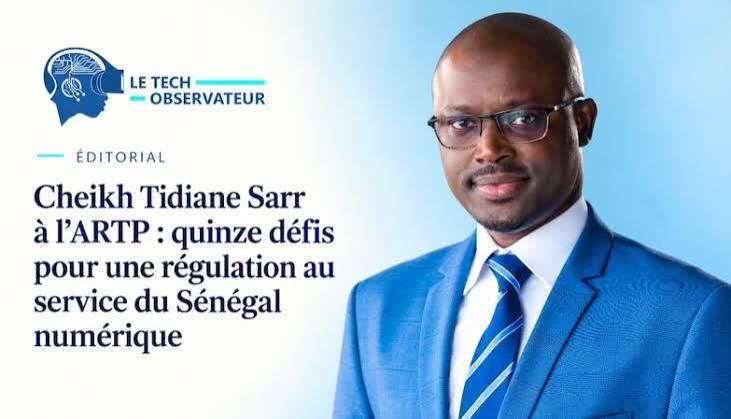

L'Université numérique Cheikh Hamidou Kane (UN-CHK) a appris avec une profonde affliction le rappel à Dieu de son illustre parrain, Monsieur Cheikh Hamidou
Lire la suite →
Le Professeur Samuel OUYA, Recteur de l'Université numérique Cheikh Hamidou Kane (UN-CHK), a été nommé à la présidence de la Commission « Innovations
Lire la suite →Lancement de la deuxième phase de distribution des kits de connectivité à l'intention des étudiants de la Promotion 13
16 octobre 2026Lancement officiel du premier rapport national sur l'IA générative dans l'enseignement supérieur sénégalais par le groupe de recherche ALIVE
16 octobre 2026Prolongation - appel à candidatures pour une admission au Master international << Métiers de l'Édition Scientifique >> (MEDITS)
Prolongation exceptionnelle des phases 1 et 2 des appels à candidatures pour le recrutement d'auditeurs en formation continue au titre de l'année académique 2025/2026
30 septembre 2026

